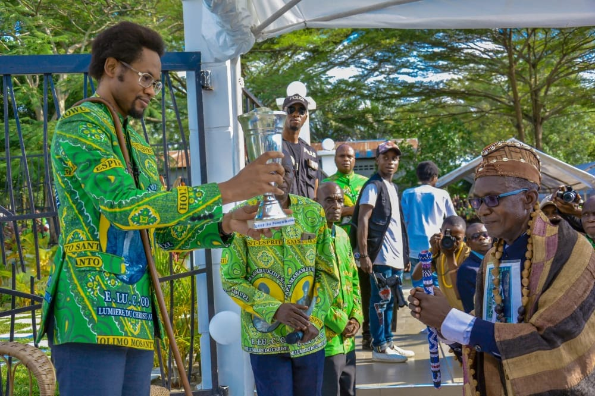
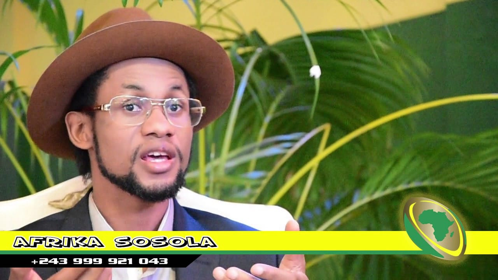
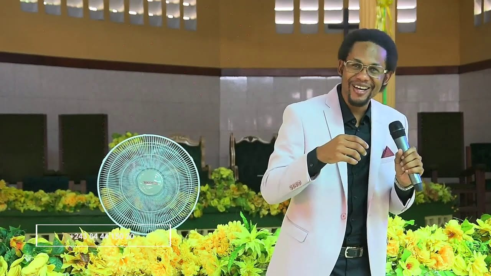

Papa Samuel Masambukidi II - Portrait Officiel

Intronisation du Roi Divin - 30 Octobre 2025

Cérémonie Traditionnelle - Autorités Coutumières

Sa Majesté Samuel Masambukidi II

Papa Masambukidi II - Photo Officielle

Intronisation pour la purification spirituelle - 28 Avril 2021

Papa Masambukidi - Ambassadeur Universel de la Paix

Prédication - Enseignements spirituels (2020)
MASAMBUKIDI I - Papa Samy (6 mars 1958 - 28 avril 1999)